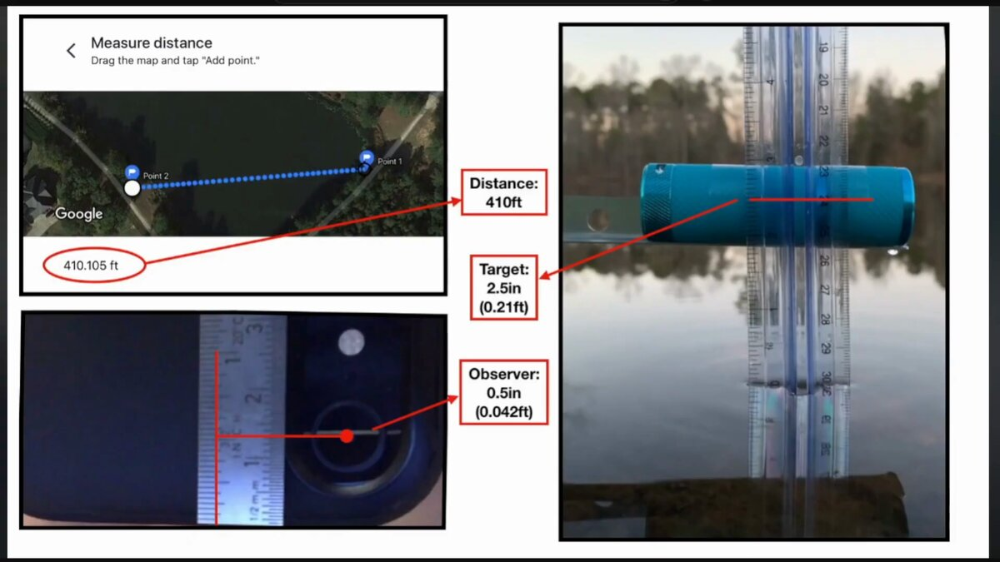
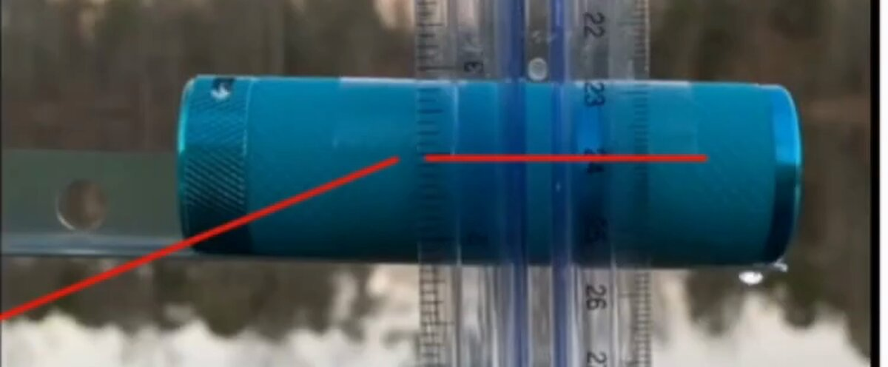
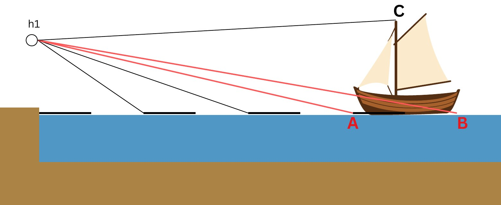
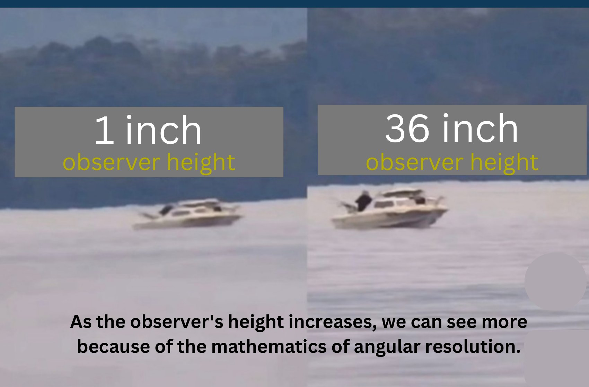
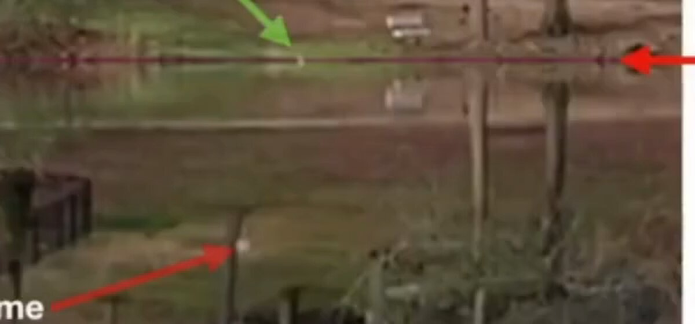
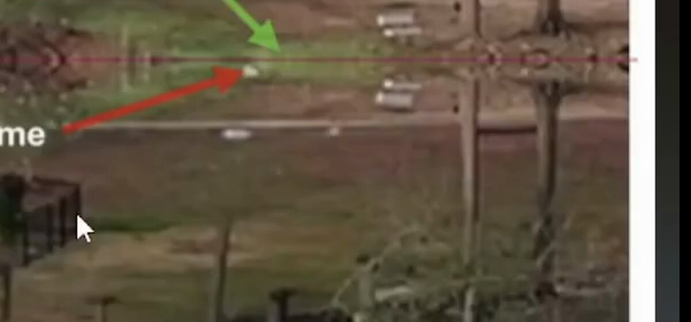
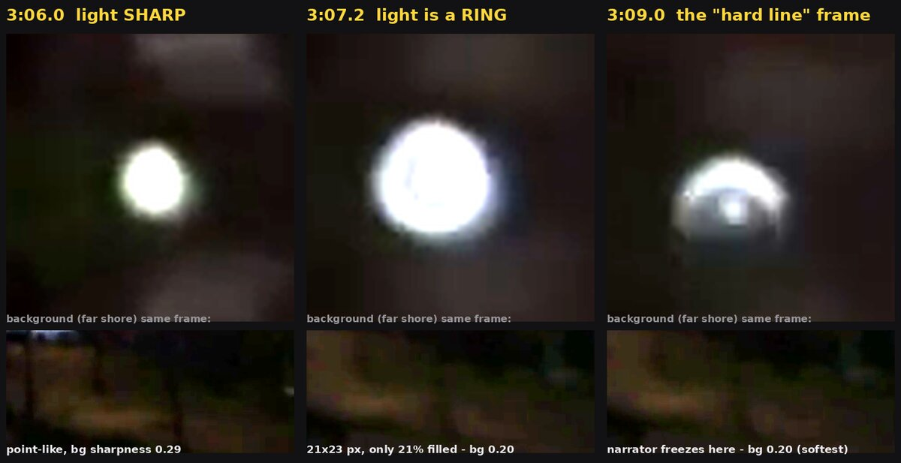
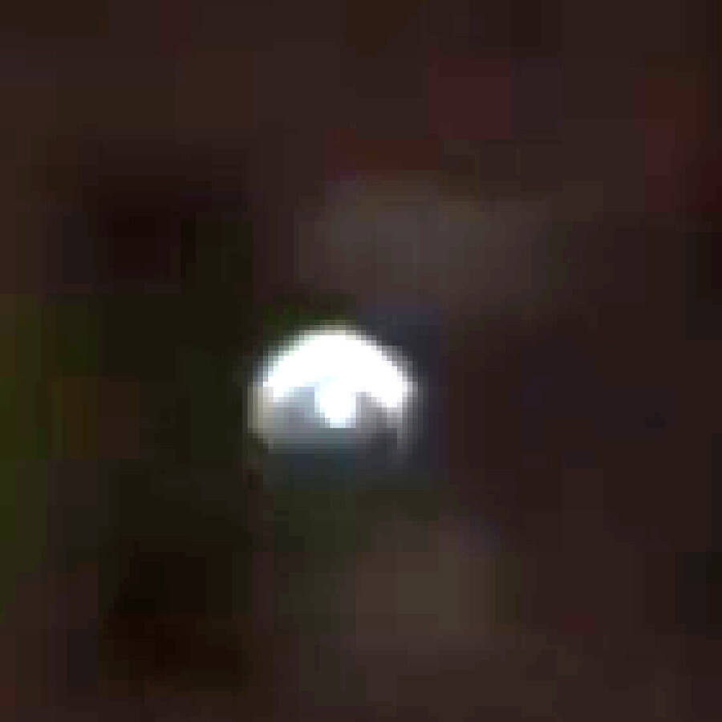

Fun With Science / Globe Deconstruction / Bottom Up Observations
A torch on a bracket, 410 feet across a pond, and what actually made it disappear.
Bottom up observations (Shape Debate, 2026) argues that a small light — 2.5 in tall, 410 ft away — vanishes when the camera drops from ~2 ft to 0.5 in above the water, and that this happens without curvature: the explanation offered is convergence and angular resolution, not the globe. The pond footage and apparatus are originally by a separate creator, “LifeIs Short”; the measurements, slides and narration analysed here are Shape Debate's own. The short version: his curvature arithmetic is right and should be conceded immediately — a globe predicts zero hidden height at 410 ft, at any of the eye heights he used. But his own experiment refutes his own explanation. Angular size does not depend on eye height, so a disappearance that depends on eye height cannot be resolution or perspective. What's left is exactly what his own daytime slide photographs: a near-field object rising into the sightline as the eye drops — plus a sharp-cutoff optical layer his “same temperature” claim never measured, plus, for the night clip's “hard line” specifically, an autofocus hunt he narrates on camera and then misreads as a physical edge.
Curvature intactClaim does not follow
What the test actually establishes
It establishes that a small light near a pond's surface became harder to see, or briefly vanished, when the camera was lowered to within half an inch of the water. It does not establish that this happened for a reason connected to Earth's shape. His own geometry already shows a globe predicts no obstruction at all at this range — so the observation, whatever caused it, cannot be evidence against curvature, because curvature was never a candidate explanation for it in the first place.
Two tests, same pond. A night test (~2:45–5:15) with a small blue anodised torch resting on a bracket at the far shore, aimed by eye; a daytime test (~10:50–12:10) with a similar target and near-field debris visible in frame. The measurement slide gives the numbers precisely: distance 410.105 ft measured on Google Maps, target height 2.5 in, observer (camera) height as low as 0.5 in — an iPhone with its case touching the water, lens centre half an inch up. A control shot is filmed from roughly 1.5–2 ft up. The camera is handheld, autofocus and auto-exposure both active.


At the lowest height, dropping from the ~2 ft control to 0.5 in, the light is reported to become harder to see or drop out; in the daytime test, near-field debris is arrowed on his own slide sitting low in frame at 2 ft and risen to the waterline at 0.5 in. His stated explanation for the night disappearance is convergence and angular resolution — that at extreme range and low eye height, distant objects simply become too small to resolve, no curvature required.
This matters, because the reflex answer — “that's just the curve” — is wrong here, and arguing it would lose the exchange.
| Observer height | Geometric horizon | Hidden height of a 2.5in target at 410ft |
|---|---|---|
| 1.5 ft (2 ft: ~9,140 ft) | ~7,900 ft | 0.00 mm |
| 5 in | ~4,170 ft | 0.00 mm |
| 0.5 in | ~1,320 ft | 0.00 mm |
At 410 ft the target sits far inside the geometric horizon at every height used, even with zero refraction. Standard refraction (k ≈ 0.17) only extends that horizon further. A spherical Earth predicts exactly zero obstruction — precisely as he says.
Whatever made the light harder to see, it is not curvature, at any eye height tested. That is the correct starting point, and it's worth taking seriously rather than reaching for the usual reply.
His stated mechanism is convergence and angular resolution — the target “gets too small to see.” This does not survive contact with his own setup, and the simplest reason comes before any arithmetic.
Two headlights that merge into one blob have not switched off.
Angular resolution governs whether you can tell two things apart. It does not govern whether you can see something at all. A car's headlights merge into a single point long before the car is out of sight; they do not go dark when they merge. A star subtends well under a thousandth of an arcminute — a thousand times below the eye's limit even for the largest of them — and thousands are visible on a clear night. Visibility of a point source is a question of how much light reaches you against the background, not of how large it is. Past the resolution limit an object stops having a discernible shape; it does not stop having a position, and a bright torch on a dark pond is nothing but position.
Angular size does not depend on observer height. Full stop.
The angular diameter of a fixed 2.5in target at a fixed 410ft distance is a constant — it does not change by a single arcsecond whether the camera sits at 2 ft or 0.5 in. If the target vanishes specifically because the camera was lowered, resolution and perspective are mechanically ruled out as the cause. Something else has to be blocking, dimming, or bending the light path itself — occlusion or refraction, not angular size.
Push it further: to the extent eye height changes distance to the target at all, it runs backward from what his own explanation needs. The 0.5in eye sits only about 2in below the 2.5in target; the ~2ft control eye sits about 21.5in below it. Over the 410ft run, those turn into eye-to-target distances of roughly 4,921.26in from the 0.5in position versus roughly 4,921.31in from the 2ft position — the low camera is closer to the target, by about 1.2mm, not farther. If “too far away to resolve” were the real mechanism, the marginally farther 2ft view should be the one that struggles, not the marginally closer 0.5in one. Instead it runs exactly backward: the target vanishes from the closer position and stays fully visible from the farther one — and even that reversed effect would need to hinge on a 1.2mm difference over 410ft, roughly five orders of magnitude too small to move a resolution threshold at all.
The footage itself shows this isn't a stable, geometry-driven effect either. In the daytime clip he narrates the light dropping out and returning within about a second: “there it's gone… and I haven't even touched the water yet. There I touched the water and it's back again.” In the night clip, the light drops out for a single frame and returns immediately. Curvature does not switch on and off inside one second. Both are the signature of a marginal, dynamic, near-surface effect — not a fixed geometric one.
The same argument runs at length in Globe Deconstruction? (Levi Miller, prerelease draft, 2026) — pp. 96–107 of a chapter that runs to 115 — opening with the headlights-merging-at-distance analogy and building through a hallway-perspective sequence to the pond test itself. It's worth answering separately from the video for one reason: the book commits to a number. The video gestures at “angular resolution”; the book names the threshold twice — the visual angle falling below “1/60th of 1 degree” (p. 102), restated as 0.0167° (p. 107). That is the standard naked-eye figure, and it is the right number to reach for.
It is also never applied to anything. The phrase “the mathematics of angular resolution” appears on p. 100, but no arithmetic follows it anywhere in this chapter — the one worked example is the p. 134 warm-up quoted in §3, which sits in the star chapter and cuts the other way. So here it is, using his threshold and his own measurements.

Read what A and B are. They are both on the water, at the near and far ends of the hull — so angle AB is the boat's length measured along the line of sight. It is a depth. C is the masthead, so AC and BC are the angles that carry the boat's height.
Now read his own sentence against his own drawing:
“When angle AB reaches 0.0167 degrees, it will be visually invisible to the eye, while angle AC and angle BC will still be visually distinguishable.” — p. 107
That is the argument conceding itself. When AB collapses, the boat keeps AC and BC — it keeps its full height, waterline to masthead. What has been lost is the ability to tell the bow from the stern. His mechanism deletes the hull's length, not the hull. A boat in that state is still entirely visible; it just sits at an ambiguous distance. That is loss of depth information, and it is not what “disappearing bottom-up” means.
The reason the diagram can't do the work asked of it is that horizontal and vertical extents obey different scaling laws, and only one of them contains the observer's height.
For a horizontal segment of length L lying on the water with its near end at distance d, seen from eye height h, the subtended angle is h/d − h/(d+L), which for d ≫ L is approximately hL/d². For a vertical extent H at distance d, it is approximately H/d. The first is proportional to h and falls off as the square of distance. The second contains no h at all.
That is the whole error, stated formally. The book correctly derives the height-dependence of horizontal extents on pp. 105–106, and then applies it to a vertical one. Lowering the camera foreshortens the water surface; it does nothing whatsoever to the angular height of an object standing on that surface.
Side elevations are hard to read if you don't think spatially, so here is the identical situation rendered from behind the observer's eye — the same vessel, the same distance, the only change being the height of the camera.
This is what the chapter's mechanism actually predicts, drawn honestly. From an inch above the water you lose the deck and you lose the sense of intervening distance — the boat appears pasted onto the horizon, because the horizon has come down to meet it. What you do not lose is any part of the boat itself. To make the hull go missing you need something in the way.

Before the arithmetic, one thing to note about the pair itself: the two frames are not scale-matched. Crop both boats to the same window and the 36 in boat is rendered noticeably larger than the 1 in boat — roughly a third larger by the cleanest measurement we could take, though we won't put a firm figure on it, because the images are low-resolution reproductions of video stills and repeated attempts to measure them automatically disagreed with each other. Either the zoom differs between the two frames or the boat's range does, and possibly both. That matters twice over. It explains most of why the right-hand boat looks sharper, which is a magnification effect rather than anything to do with eye height. And if the range changed as well, then more than one variable moved between the two photographs, so the pair does not isolate observer height in the way the caption assumes. This does not touch the fact that more hull is visible on the right — that part is real and is not in dispute — but it does mean the comparison is not the controlled one it is presented as.
With that noted, take a 6 m hull, about right for the boat pictured, and apply his own 1-arcminute threshold to angle AB:
| Observer height | Beyond this range, angle AB is unresolvable | Angle AB for a boat 1 mile out |
|---|---|---|
| 36 in | ~441 ft | 0.44 arcsec — 1/136 of his limit |
| 1 in | ~66 ft | 0.012 arcsec — 1/4,900 of his limit |
The boat is plainly hundreds of yards out — far past 441 ft on any reading of the frame. Both photographs are therefore taken well beyond the range at which angle AB has already collapsed to nothing, and the exact distance doesn't need settling for that to hold.
The mechanism also has nothing to act on in the very demonstrations offered for it. A ship departing stern-on presents its transom — a flat face with essentially no along-sight depth, so angle AB is near zero from the outset — and hulls still vanish bottom-first on a departing ship, which is the observation the whole chapter exists to explain. The night pond test uses a bare torch: a point source, for which AB is undefined. The daytime pond test uses a flat target facing the camera, for which AB is again effectively zero. In all three cases the quantity said to be doing the work is either zero or has no meaning, and the effect happens anyway.
Two things in this chapter are correct and should not be argued with. Ground-plane foreshortening is real, it genuinely does scale with eye height, and at an inch above a lake the near water really does compress into a smeared band in which an object's base is hard to separate from the surface it sits on. And seeing more of a distant object from a greater height is a real, repeatable observation. The disagreement is only about what that second fact indicates: an occlusion effect and a resolution effect both improve with height, but they separate cleanly under magnification, because resolution is a property of the instrument and occlusion is not. A P900 at full zoom resolves roughly 2.5 arcseconds — more than twenty times finer than the naked-eye figure the chapter relies on. If the missing hull is a resolution artifact, that camera restores it. If something is physically in the way, no aperture ever will. The chapter never runs that test, and it is the one test that would settle the question using equipment already in hand.
The caption on p. 100 asks why more of the boat is visible from higher up “if the water horizon extends well beyond the boat in both scenarios.” Take that at face value, because it looks right: the water horizon does appear to lie beyond the boat. That observation is worth more than the chapter makes of it. If the horizon is beyond the boat, the boat is inside the horizon distance — and a globe then predicts no occlusion at all. Exactly as at the pond in §2, curvature is excluded here by his own image, before any argument about resolution is needed.
So something else is cutting the hull off at 1 in and not at 36 in, and the simplest candidate is the one the eye height itself makes almost unavoidable: waves. A crest occludes whatever lies beyond it as soon as it rises above the eye. At 1 in the eye is 2.54 cm up, so any crest taller than an inch qualifies — which on open water is very nearly all of them. A ray grazing a crest of height w at distance x arrives at a target at distance d at a height of e + (w − e)·d/x, so the occlusion is amplified by the ratio d/x.
| Intervening crest | Hull hidden, eye at 1 in | Hull hidden, eye at 36 in |
|---|---|---|
| 4 cm crest, 30 m out | 17 cm | none — ray passes above |
| 4 cm crest, 10 m out | 46 cm | none — ray passes above |
| 6 cm crest, 30 m out | 37 cm | none — ray passes above |
Boat taken at 300 m. These are lower bounds — they assume a single crest, where real chop presents a whole succession, the nearest qualifying one dominating. At 36 in the eye sits 91 cm up and no ordinary lake wave reaches it, so the same water occludes nothing at all.
We can't be definitive about which mechanism is operating in that particular pair of frames, and we're not going to pretend otherwise — small waves are the most likely candidate at an inch of eye height, but near-field clutter or a sub-refractive layer would produce something similar, and the images alone don't separate them. That is the same honest position §8 takes about the pond. What can be said is the part that matters for the argument: it is not angular resolution, because AB has collapsed identically in both frames; and it is not plain curvature, because his own horizon shows the boat inside the horizon distance. Curvature could only re-enter through atypical refraction — a sub-refractive layer bending rays upward and hiding more than geometry alone — which is the mirror image of the superior-mirage case that governs the Rampion wind-farm footage, and which, like the temperature gradient in §5, would have to be measured rather than assumed.
At 0.5in eye height, the sightline to the 410ft target skims extraordinarily close to the water for its entire length — clearing the surface by roughly half an inch near the camera, widening to only about two inches by the far shore. Anything taller than roughly 0.6in sitting in the first 15ft of that path is enough to occlude the target outright.


That's his own daytime summary slide, arrow and all: a piece of floating debris roughly 15ft from the camera. At the 2ft control height it sits low in frame; at 0.5in it has risen to sit on the far waterline — level in frame with a target 27× further away. And that is the conservative reading. If the debris stands even an inch proud of the water at 15ft, its top is around 9 arcminutes above the eyeline, against the torch's 1.4 — six times higher, and squarely in front of it. His own caption even names the mechanism — the eye “presses” into the gap between the horizon line and the near debris — and then reaches the wrong conclusion from it: not “the target dissolves,” but “near-field objects now sit higher in frame than far-field ones, and so can block them.” That's ordinary occlusion by something close to the lens, not a resolution limit and not curvature.
One honest caveat: the night clip and the daytime clip are different sessions with different targets, so this specific piece of debris isn't necessarily what blocked the night light. What the daytime slide demonstrates is the mechanism — that at 0.5in eye height, near-surface clutter can rise to and above a far target's apparent position. It doesn't identify the specific night-time occluder, which could equally be a ripple crest, a wake (waterfowl are visible on the sightline in the night frames), floating film, or the meniscus around the phone case itself as it neared the water.
The natural objection is “a warm night wouldn't matter, the water and air were about the same temperature.” That's an impression, not a measurement — and the physically relevant quantity isn't bulk air temperature, it's the vertical temperature gradient in the lowest few centimetres directly above the water, exactly the layer this sightline skims through.
A pond at dusk in cool weather, with water still holding more heat than the rapidly cooling air above it, sets up the opposite of the classic looming/superior-mirage case: not a cold surface under warm air, but a warm surface under cooler air — a superadiabatic layer. That bends light upward, hiding low targets earlier than plain geometry predicts, with a sharp mirage cutoff rather than a gradual fade. And it doesn't take much:
| Sightline sags below the straight chord by | Gradient that does it | Temperature difference across the lowest 4cm |
|---|---|---|
| 5 mm | −2.6 °C/m | 0.10 °C |
| 13 mm | −6.8 °C/m | 0.27 °C |
| 25 mm | −13.0 °C/m | 0.52 °C |
| enough to hide the target completely | −17.6 °C/m | 0.70 °C |
The first three rows are how far the sightline bows below the straight chord — which on its own hides nothing, because the torch radiates in every direction and a slightly steeper ray still reaches the lens. The row that matters is the last one: the condition under which no ray from a 2.5in source can reach a lens half an inch up without first striking the water. That takes about 0.7 °C across the lowest four centimetres — seven times the first row, and worth stating plainly rather than quietly claiming the small number. It is still an ordinary near-surface gradient on an evening when the water is warmer than the air, of the kind routinely measured in the skin layer; it is not the default, and the honest claim is that it is common enough that it has to be measured rather than assumed away. This is also the physical reason surveyors require a levelling sightline to clear the ground by half a metre — a grazing sightline within centimetres of a surface is the textbook worst case for exactly this kind of error, and the entire 0.5in test is conducted inside that exclusion zone.
A sightline held within inches of a water surface producing an anomalous result isn't new. It's the Bedford Level Experiment, one of the founding texts of flat-earth argument, and it went wrong for the identical reason this one does: staying inside the near-surface layer instead of getting out of it.
In 1838, Samuel Birley Rowbotham (later publishing as “Parallax”) held a telescope 8in above the water of the Old Bedford River and tracked a boat with a 3ft flag receding six miles down a dead-straight canal. The boat stayed visible the whole way — which, by his reasoning, a curved Earth should have prevented. He never accounted for refraction in that lowest layer, and the result became a cornerstone of modern flat-earth argument.
In 1870, Alfred Russel Wallace accepted a wager from flat-earther John Hampden to redo it properly. His fix was exactly the fix in §9 below: get the sightline out of the near-surface layer entirely. He raised the line of sight to 13ft above the water and added a reference pole at the canal's midpoint. Sighting from Welney bridge, the midpoint disc appeared distinctly above the far marker three miles beyond it — the three did not line up, which is what a curved surface requires and a flat one forbids. Wallace won the bet. Henry Yule Oldham reproduced it again in 1901 with three poles at equal height above the water and found the middle one sitting about six feet higher than the two end poles — the same result, a second time, by a different method.
The twist worth naming: Rowbotham's version and this one are the same physical trap producing opposite-looking “proofs.” Rowbotham's grazing sightline kept something visible that curvature said should be hidden, and he read that as disproving the globe. This video's grazing sightline makes something disappear that curvature said should stay fully visible, and it's read the same way — as disproving the globe. Both are the same near-surface optical layer, just tipping the anomaly in opposite directions depending on the conditions on the day. Neither result is evidence about the shape of the Earth; both are evidence that a sightline held inches above water cannot be trusted, in either direction — and the fix, in both cases, separated by 132 years, is the same one: move the line of sight up and out of that layer.
At 3:09 the video freezes on a frame and reads the light as sliced by a hard, straight edge. The frame-by-frame sequence around that moment tells a simpler story.


One bookkeeping note for anyone checking the arithmetic across pages: refraction coefficients here use k ≈ 0.17, which is what Bowditch's terrestrial horizon formula implies — 1.17√h against a geometric 1.06√h works out at k ≈ 0.18 — while the Rampion page uses k ≈ 0.13, Gauss's classical geodetic coefficient. Both are standard, the difference moves hidden heights by a few percent, and nothing on either page turns on the choice.
In fairness: his geometry is right and his measurements are careful. The disappearance is real and, by his account, reproducible — nothing here suggests the footage is staged or fabricated. But real and reproducible isn't the same as curvature-caused. Occlusion and sub-refraction are both near-surface, both height-dependent, and both can produce a sharp cutoff; this footage alone can't fully separate which was doing the work on any given frame, and the night clip's specific occluder (if any single one exists) is not identifiable from the video. What can be said with confidence is what it isn't: not curvature (his own arithmetic already rules that out at every height tested), and not angular resolution or perspective (which can't produce a height-dependent effect on a fixed-distance, fixed-size target at all).
The light really did get harder to see, and lowering the camera really is what changed it — that part isn't in dispute. But his own arithmetic already shows curvature predicts zero effect at this range, at every height he used, and his own experiment already rules out his stated explanation, because angular size can't depend on eye height. What's left standing, on his own footage, is ordinary near-surface physics he didn't control for: a near-field occluder his own slide draws an arrow at, a temperature gradient of a few tenths of a degree he never measured, and — for the specific “hard line” moment — a camera autofocus hunt he narrates himself and then reads as a physical edge. None of that is curvature. None of it is perspective, either.